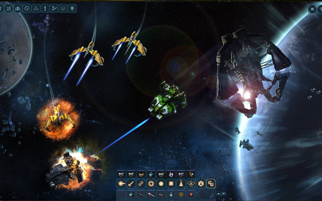
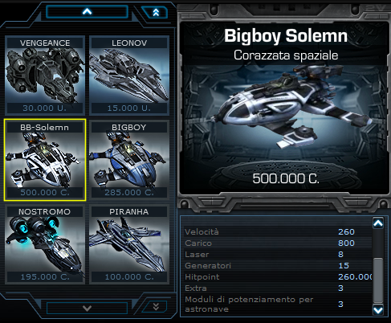
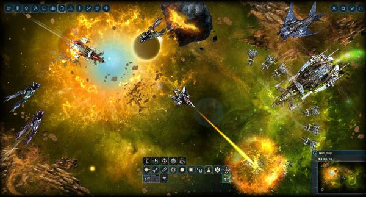
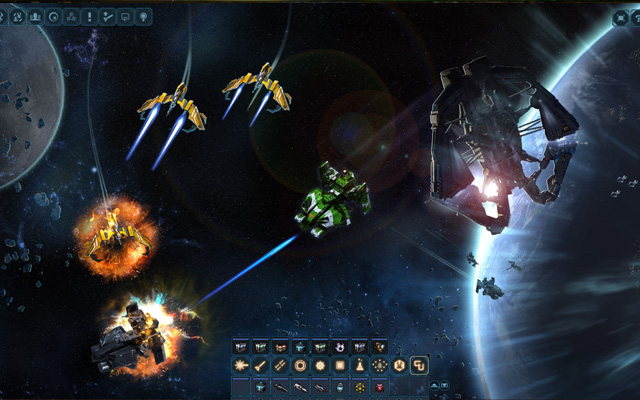
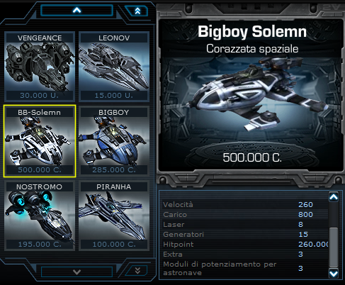
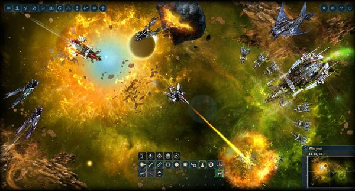

Esplorate l'universo sconfinato di "Dark Orbit", un avvincente gioco di azione spaziale sviluppato da Bigpoint. Conquistate il cosmo mentre vi immergete in una galassia in continua evoluzione, combattendo nemici alieni, accumulando risorse preziose e cercando di stabilire il vostro dominio nello spazio profondo.
In "Dark Orbit", vi troverete a bordo della vostra astronave personale, pronti a solcare le stelle e ad affrontare sfide emozionanti. Scegliete tra tre diverse fazioni, ciascuna con le proprie caratteristiche e tecnologie uniche, mentre vi lanciate in avventure intergalattiche che vi porteranno a esplorare pianeti, asteroidi e stazioni spaziali abbandonate.
L'azione è al centro dell'esperienza di gioco, con combattimenti spettacolari contro orde di alieni ostili e navi nemiche. Sfruttate al meglio le vostre abilità tattiche, raccogliete risorse preziose e migliorando la vostra astronave con nuovi equipaggiamenti e armamenti avanzati.
Ma "Dark Orbit" è più di un semplice sparatutto spaziale. Il gioco offre un mondo aperto da esplorare, ricco di missioni, eventi dinamici e interazioni sociali. Unitevi a squadre di giocatori in emozionanti battaglie di fazione, partecipate a guerre spaziali epiche e stringete legami con alleati di tutto il mondo mentre vi avventurate nelle profondità del cosmo.
Grazie a una grafica straordinaria e un design dettagliato delle astronavi e degli ambienti spaziali, "Dark Orbit" offre un'esperienza visivamente coinvolgente che vi farà sentire veramente parte dell'universo futuristico. L'atmosfera sonora avvincente e le esplosioni spettacolari aggiungono ulteriore profondità all'esperienza, trasportandovi in un mondo di avventure interstellari.
Preparatevi a solcare i cieli infiniti di "Dark Orbit", dove il futuro è nelle vostre mani. Salite a bordo della vostra astronave, preparate i vostri cannoni e immergetevi nell'emozione dell'esplorazione spaziale, della battaglia e della conquista in uno dei giochi di azione spaziale più apprezzati del suo genere.
 




